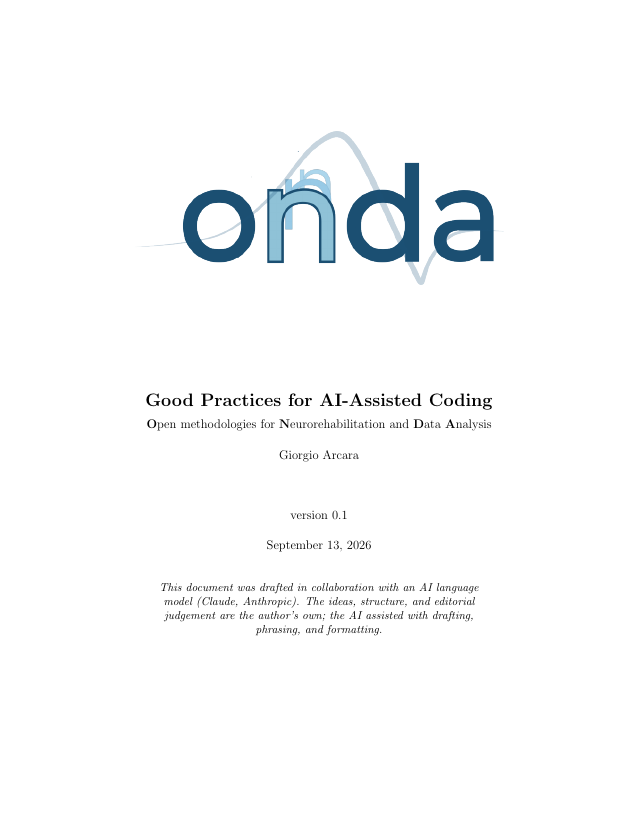
Guide FeaturedGood Practices for AI-Assisted Coding (Lab guide)
The ONDA Lab’s short written guide on how to use AI tools for coding in research: define the problem first, trace before you trust, and keep the human in charge.
Talks, guides and tutorials from the Lab, on coding, open science, neuropsychology and data analysis. Everything is free to browse, and most of it lives on GitHub.

Guide FeaturedThe ONDA Lab’s short written guide on how to use AI tools for coding in research: define the problem first, trace before you trust, and keep the human in charge.
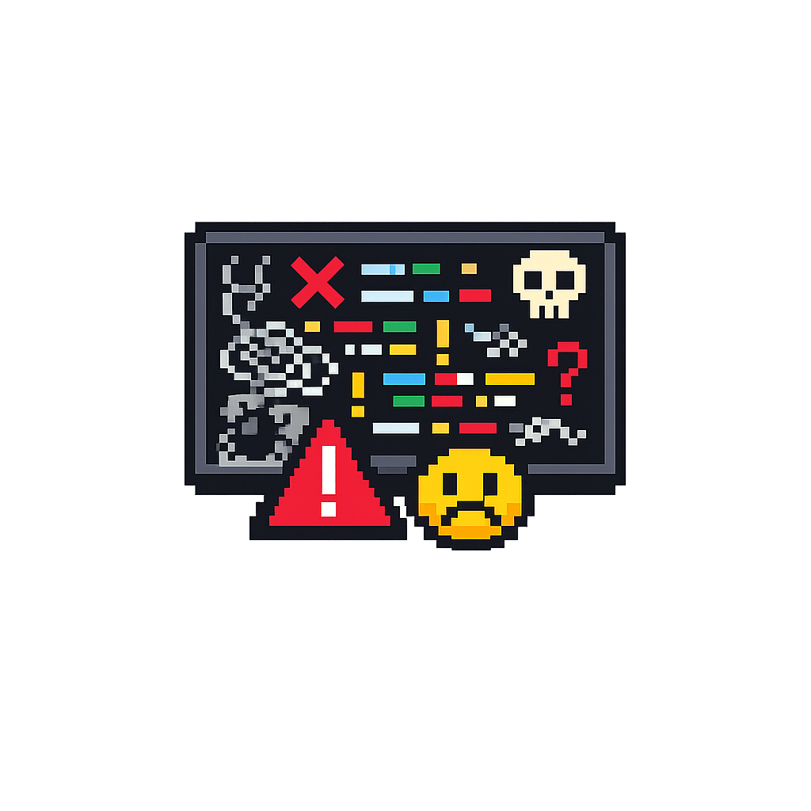
Guide FeaturedA short and humorous guide to good coding principles (and why you shouldn’t write terrible code), by ONDA Lab and friends.
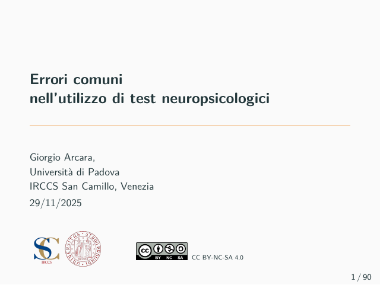
Talk FeaturedGli errori più frequenti nell’uso e nell’interpretazione dei test neuropsicologici, e come evitarli.
The ONDA Lab’s short written guide on how to use AI tools for coding in research: define the problem first, trace before you trust, and keep the human in charge.
Practical, step-by-step advice for students writing their thesis, from structure to figures and slides. Available in English and Italian.
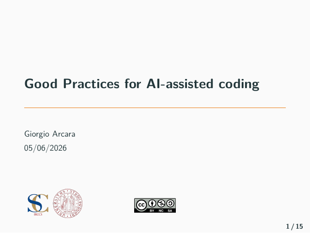
TalkA talk on the opportunities and pitfalls of using AI tools for coding in scientific research, with personal and Lab views on the issue.
A short and humorous guide to good coding principles (and why you shouldn’t write terrible code), by ONDA Lab and friends.
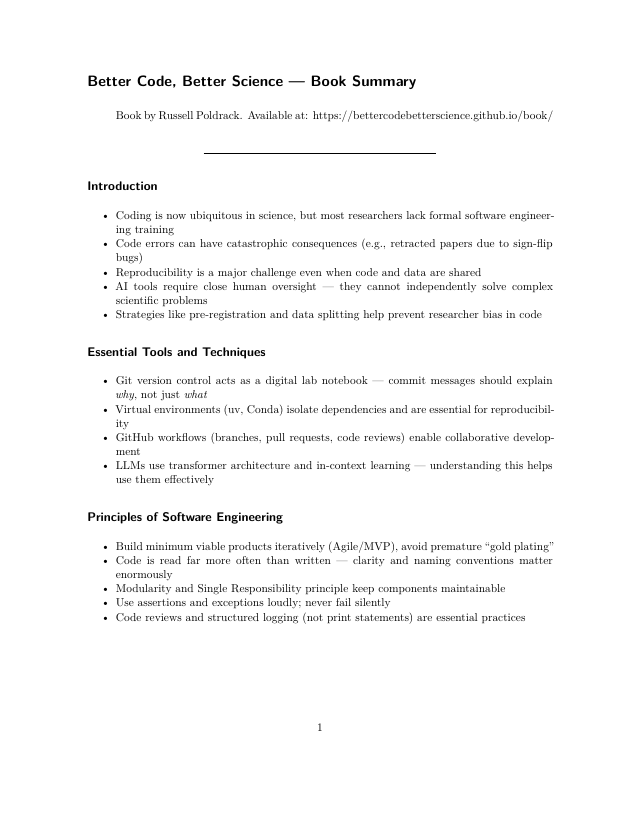
GuideKey points from Russell Poldrack’s book on software engineering practices for researchers, summarised for the Lab.
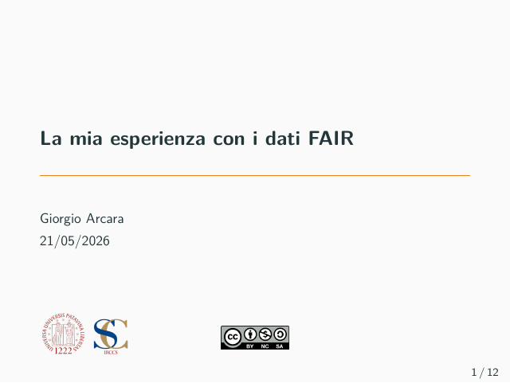
TalkUn racconto dell’esperienza con i dati FAIR, sia come utilizzatore sia come curatore di dataset.
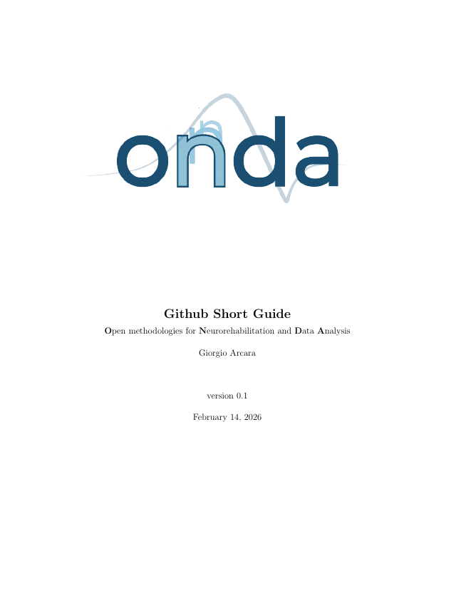
GuideA compass, not an encyclopedia: the minimal GitHub knowledge you need for version control in everyday research in neuroscience and psychology.
Gli errori più frequenti nell’uso e nell’interpretazione dei test neuropsicologici, e come evitarli.
Update from the San Camillo / ONDA Lab coding group: what we learned about GitHub, good habits, and using LLMs for programming.
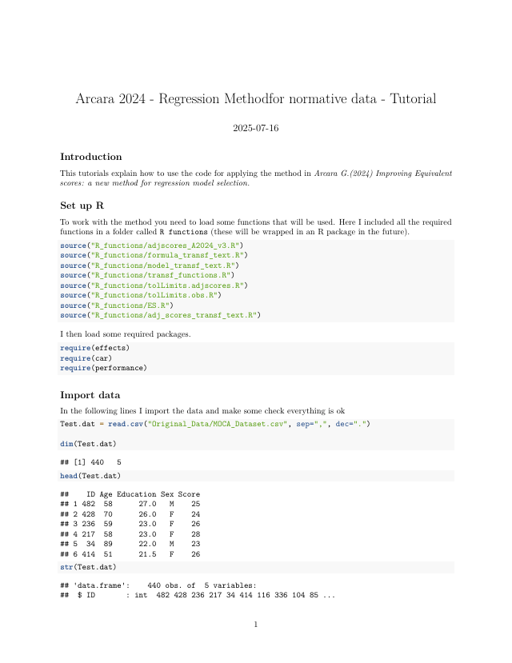
TutorialHands-on R tutorial for the regression-based method for normative data in clinical neuropsychology (Arcara, 2024).
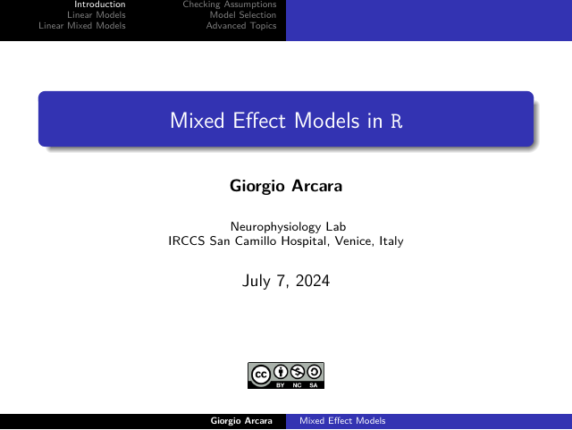
TutorialA full course on linear mixed models in R, from linear models to assumptions, model selection and advanced topics. Comes with an R project to practise.
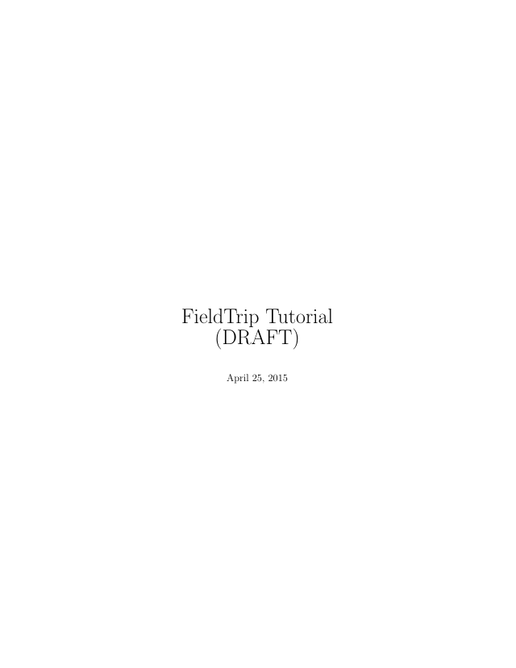
TutorialAn introductory tutorial to EEG/MEG analysis with the FieldTrip toolbox for MATLAB.
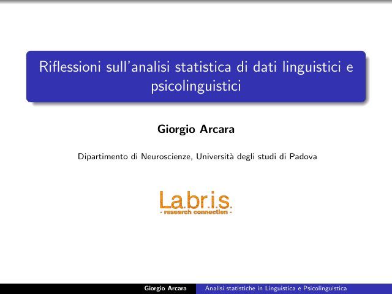
TalkSeminario sull’analisi statistica in linguistica e psicolinguistica.
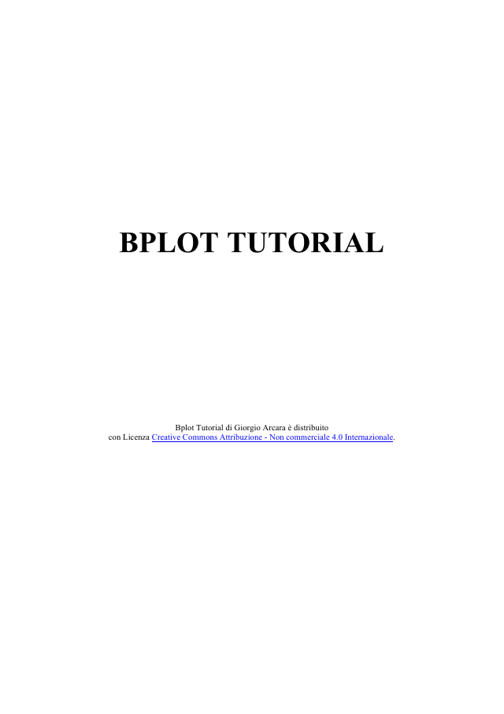
TutorialGuida all’uso di BPLOT per creare grafici a partire da file di dati .avr: come ottenerlo, installarlo e utilizzarlo.
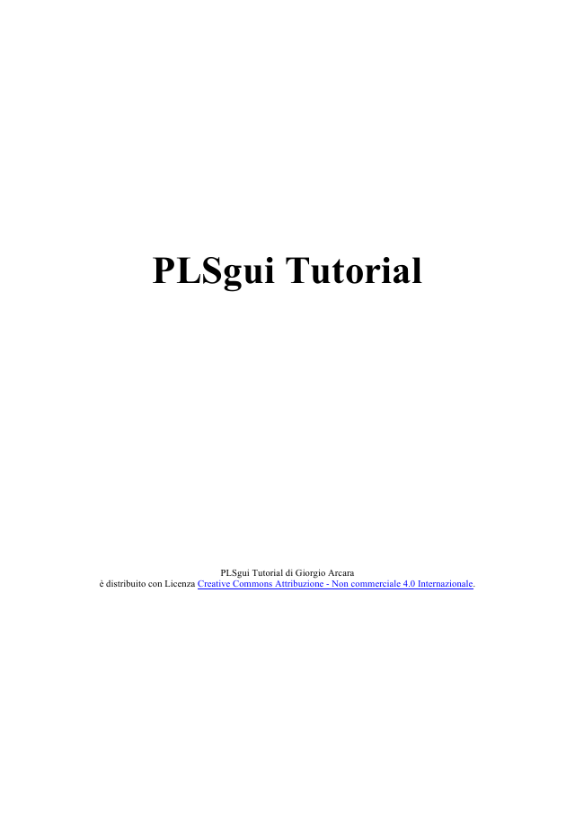
TutorialTutorial sull’analisi PLS (Partial Least Squares) con PLSgui: introduzione teorica, installazione, preparazione dei file e uso del programma.
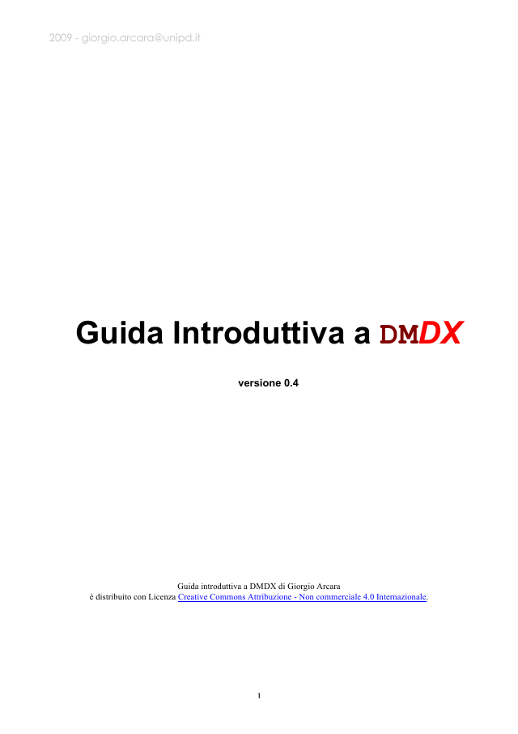
TutorialGuida introduttiva a DMDX, il software gratuito per esperimenti di psicologia.
Nothing matches these filters.
We are happy to share what we learn on coding practices, open science, psychometrics and data analysis.
Get in touch More on GitHub